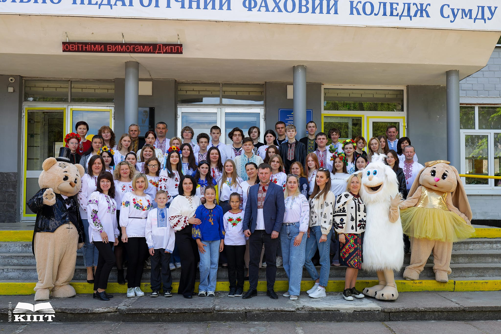

Про ініціативну групу
Ініціативна група була створена у 2022 році з метою участі у конкурсі міні-грантів в рамках проекту «Підвищення позицій ОГС Сумщини через адвокатування програм участі молоді у формуванні політики громад».
Відтоді, група активно працює над реалізацією різноманітних заходів та проектів, спрямованих на розвиток молодіжної політики у Конотопській територіальній громаді.
Основні напрямки діяльності
Реалізація міської програми «Молодь»
Члени групи беруть активну участь у реалізації заходів в рамках міської програми «Молодь», що курується відділом Конотопської міської ради у справах молоді та спорту. Програма включає в себе різні освітні, психологічні, спортивні та культурно-мистецькі проекти.
Одним з основних напрямків діяльності є організація та проведення просвітницьких та культурних заходів.
Зокрема, група ініціювала і провела:
1. Ярмарок українських традицій: захід, що популяризує національну культуру та традиції.
Цикл тренінгів «КІПТ: Культура, Історія, практика, Технології»: серія тренінгів, спрямованих на розвиток культурних та історичних знань, практичних навичок та технологічних умінь серед молоді.
2. Одним з спортивних заходів які ми провели є:
Спортивні змагання «Нащадки героїв»: спортивні змагання, що спрямовані на вшанування національних героїв та розвиток патріотичного виховання.
Важливість та досягнення
За час свого існування, група значно вплинула на розвиток молодіжної політики у громаді, підвищила рівень участі молоді у громадському житті та створила численні можливості для самореалізації молодих людей. Завдяки ініціативам групи, молодь має змогу активно долучатися до формування політики громади, розвивати свої навички та реалізовувати власні проекти.



Наша група
Сивець Марина Олександрівна
- Практичний психолог. Викладач психології. Соціальний педагог. Практичний психолог в закладах освіти
Хоменко Галина Вікторівна
- Викладач філологічних дисциплін
Лобурцова Олена Олегівна
- Спеціаліст із соціальної роботи
Мельник Ольга Анатоліївна
- Заступник директора з навчально-виховної роботи